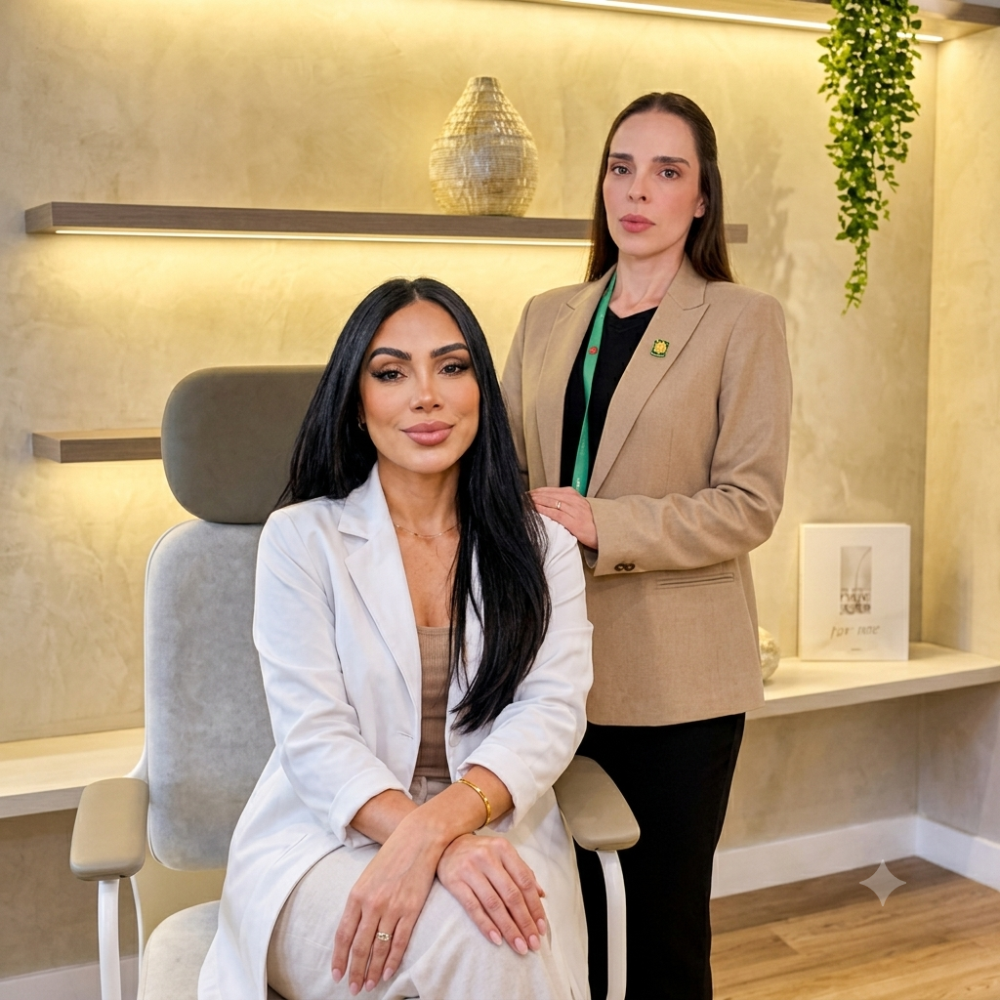
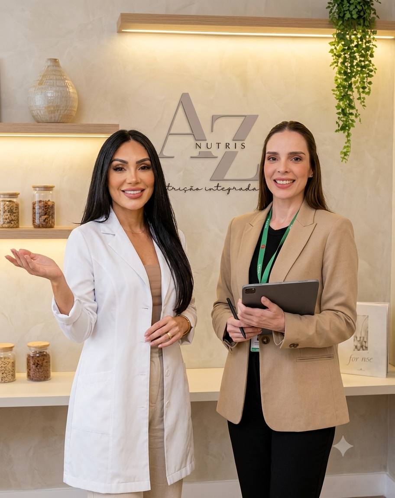
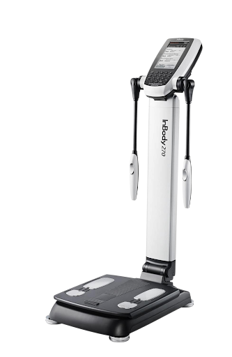
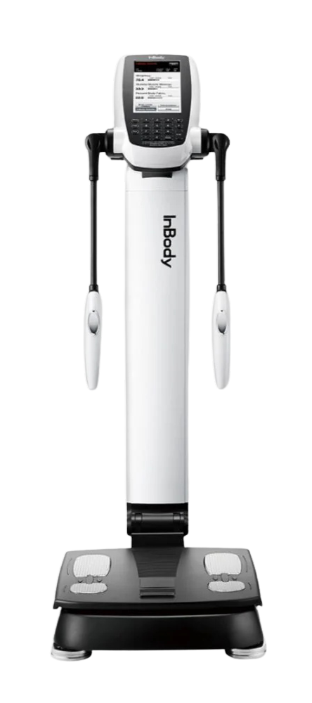
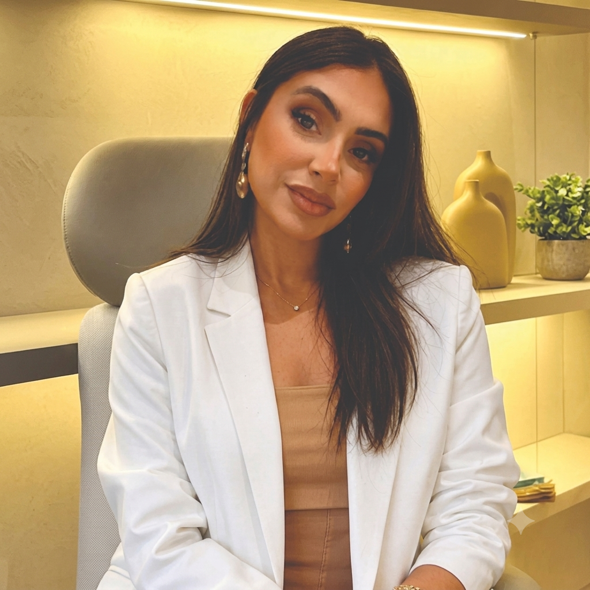
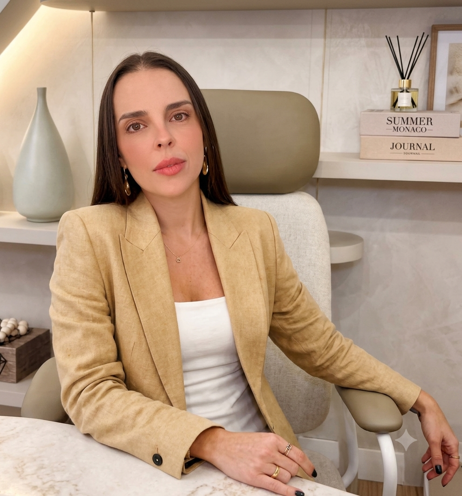

Transformamos vidas através da nutrição individualizada.
A Az nutris, liderada pela Dra. Cibele Lopes e pela Dra. Jéssica Kassab, vai além de tratar os pilares da saúde. Nossa missão é inspirar o autocuidado como um estilo de vida.
Agendar consulta →

Muito além da alimentação.
Na nossa clínica ciência, tecnologia e acolhimento caminham lado a lado para proporcionar uma experiência nutricional completa.
Acreditamos que cada pessoa é única. Por isso, antes de definir qualquer estratégia nutricional, investigamos seus biomarcadores, hábitos, ambiente e propósitos. Esse olhar nos permite compreender as causas, e não somente tratar os sintomas.
Seja no tratamento de patologias, na prevenção ou na promoção da longevidade saudável, oferecemos uma abordagem nutricional integrada com o compromisso de promover resultados consistentes e duradouros, respeitando seus valores e sua individualidade — sem terrorismo nutricional.
— Nossos diferenciais —
E se um dos segredos para acelerar os seus resultados estivesse no acompanhamento com alta tecnologia, precisão e custo acessível?

Mapeamento metabólico com Bioimpedância InBody 270S
Rápido e indolor
A bioimpedância é um mapeamento metabólico, rápido e com até 99% de precisão, que revela muito além do peso: mostra a composição corporal em detalhes para um acompanhamento realmente personalizado.
Dados detalhados
Análise segmentada de membros e tronco com precisão, em poucos minutos e total conforto — com histórico comparativo entre as avaliações ao longo do tempo.

Tecnologia e precisão
Utilizamos a InBody 270S, referência mundial em bioimpedância avançada, com tecnologia multifrequencial e sistema tetrapolar de oito contatos.
Resultado personalizado
Um recurso valioso para quem deseja decisões mais seguras, metas mais bem definidas e resultados mais consistentes.
Segurança e confiança
Equipamento reconhecido globalmente por profissionais que buscam excelência em avaliação corporal.
Por que o acompanhamento com a InBody 270 é importante para você?
Resultados personalizados
Entenda seu corpo em detalhes para decisões mais inteligentes.
Planos mais eficazes
Dados precisos que orientam estratégias alimentares muito mais assertivas.
Motivação que se vê nos dados
Acompanhe conquistas reais e mantenha o foco na sua evolução.
Cuidado que faz a diferença
Mais do que números, é sobre saúde, performance e qualidade de vida.
Indicado para qualquer pessoa que deseje conhecer sua composição corporal com precisão — desde quem busca emagrecimento e ganho de massa muscular até atletas e pacientes em acompanhamento clínico.
O exame fornece massa muscular esquelética, percentual e massa de gordura corporal, água corporal total, gordura visceral, taxa metabólica basal e análise segmentada por braços, pernas e tronco.
O exame não é recomendado para gestantes ou pessoas com marca-passo e outros dispositivos eletrônicos implantados. Em caso de dúvida, nossa equipe avalia o seu caso antes da avaliação.
Nutricionistas, médicos e educadores físicos são os profissionais mais indicados para realizar e interpretar o exame dentro de um plano de cuidado individualizado.
Basta subir na balança descalço, segurar as alças e permanecer parado por cerca de um minuto. O aparelho emite uma corrente elétrica indolor e imperceptível que mapeia a composição corporal.
Recomendamos jejum de 2 a 3 horas, evitar exercícios físicos intensos e ingestão de álcool no dia anterior, e realizar o exame preferencialmente sem acessórios metálicos.
Quem cuida da sua nutrição.

Dra. Cibele Lopes
Nutricionista